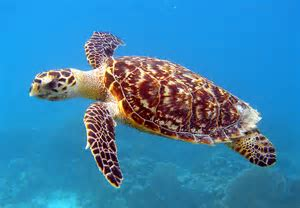
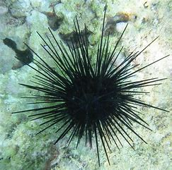
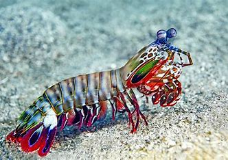
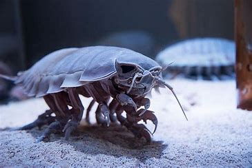
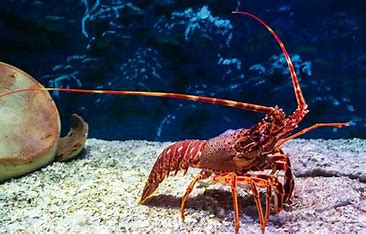
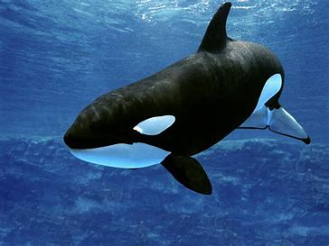
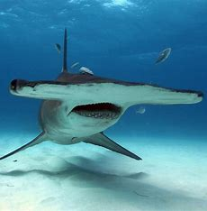

|

Морска костенурка
Един от по-големите преставители на семейство костенурки, морската костенурка може да достигне 3-4 метра дължина. Те
са тревопасни животни и са много добри плувци. Както наземните си роднини, морските костенурки имат големи коруби, които служат за защи
та. Снасят яйцата си на сушата и после малките трябва да извървят много опасния път до водата.
|
|

Морски таралеж
Това са малки мекотели, които имат твърда външна обвивка на която растат шипове. При някои видове тези шипове са отрони,
но най-разпространените са неотровни. Морския таралеж както другите прости животни той се храни с малки животни които се носят във вода
та. Интересно е че само черупката на таралежът остава след като той умре.
|
|

Удряща скарида
Тази скарида се нарича така защото за защитен и ловен механизъм, удрящата скарида може да изтреля компресирана вода от р
ъката си, и така да я изтреля напред-сякаш удря. Ударът е много силен и в повечето случаи убива жертвата. Скаридата въпреки малкия си раз
мер от 10 см е хищна и се храни с по-големи от нея животни.
|
|

Гигантски исопод
Гигантският исопод е изключително необичайно същество, което обитава морските дълбини на океана. Той е един от най-голе
мите видове исоподи и може да достигне дължина от над 50 сантиметра. Гигантският исопод се храни предимно с трупове на по-големи морски
организми, които падат на дъното на океана.
|
|

Омар
Омарът е известен със своята вкусна и деликатесна месеста част, която го прави един от най-предпочитаните морски дарове за храна по
целия свят. Тези голями ракообразни се срещат в различни морски среди, като предпочитат места с плитки води и дънни структури като корал
и и скалисти области. Омарът е известен със своите големи клешти, които използва за защита и за лов на своята плячка.
|
|

Косатка
Косатката е едно от най-интелигентните и мощни морски бозайници. Това големо морско бозайниче е част от семейството на китовете
и е известно със своите впечатляващи умения за лов и комуникация. Косатките са изключително социални същества, които живеят в големи гру
пи, наречени пастища. Те се хранят предимно с риба, калмари и други морски животни.
|
|

Риба чук
Рибата чук е уникално същество със странна и предизвикателна визия. Тя е известна със своята плоска и широка глава, която прилич
а на чук. Тази необичайна форма има функционално значение, като помага за намирането на храна в дъното на морето. Рибата чук използва гл
авата си като булдозер, за да изкопае в почвата и да намери скритите в нея безгръбначни и мекотели.
|